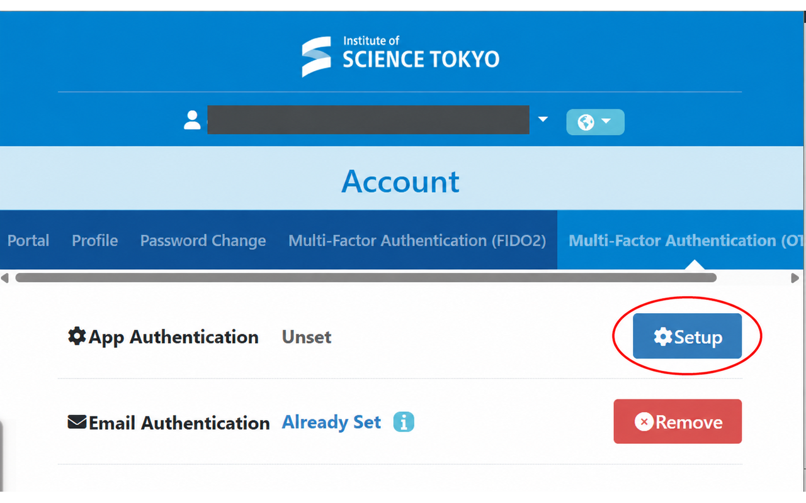
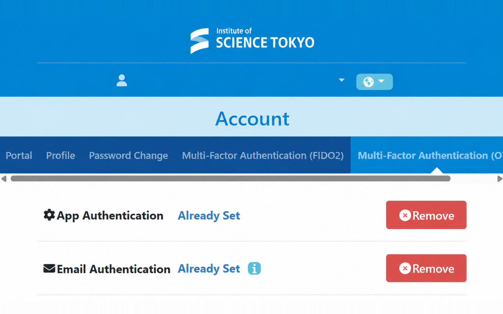
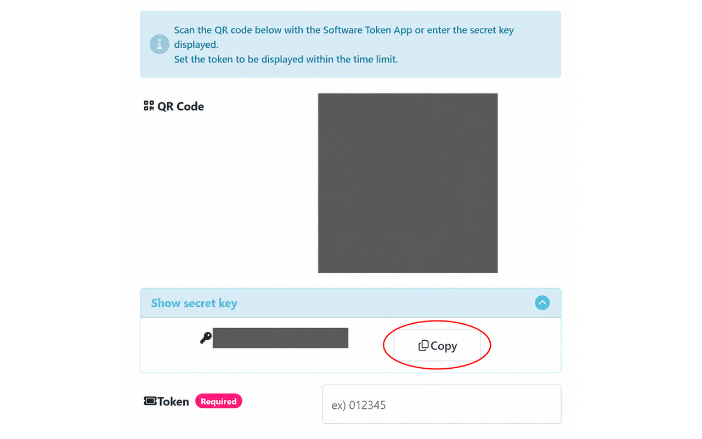
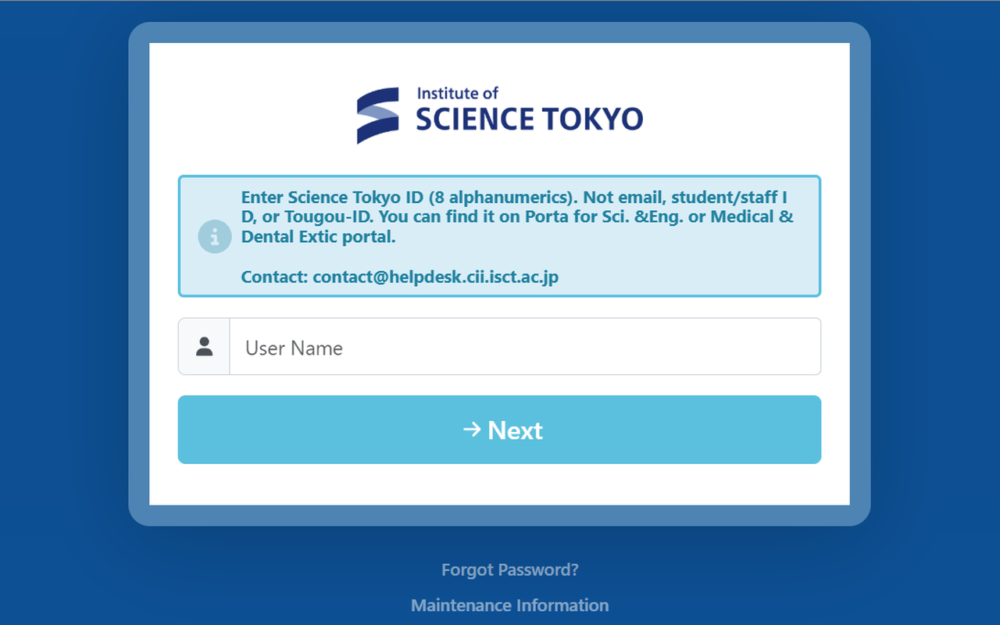

大学の「多要素認証（OTP） / Multi-Factor Authentication (OTP)」を開きます。利用状況に合わせて、次のどちらかの手順で進めます。
「アプリ認証 / App Authentication」が「未設定 / Unset」なら、「設定 / Setup」を押します。その後、下の「2. 設定キーをコピーする」に進みます。

「アプリ認証」が「設定済み / Already Set」で、キーを再表示できず、有効なキーも手元にない場合は、次の手順で取得し直します。
「解除」すると古いキーは使えなくなります。以前のキーを登録した認証アプリも、新しいキーで登録し直してください。

LMSを利用したことがあっても、アプリ認証が「未設定 / Unset」なら、上の「初めて利用する人」と同じ手順で進めます。
有効な設定キーを持っている場合は、そのキーを使って「3. 拡張機能に保存する」に進みます。
「シークレットキーを表示する / Show secret key」を開き、「コピー / Copy」を押します。拡張機能の「設定キー」欄に貼り付けます。QRコードの読み取りは不要です。

必要なら大学のユーザー名とログインパスワードも入れて「保存」を押します。
入力した項目だけでも保存できます。残りはあとから追加でき、空欄の項目は保存済みの内容を使います。
大学の登録画面でコードを求められたら、拡張機能の設定画面に出る6桁を入力し、大学側の「設定」を押すと登録完了です。
「保存データの確認・削除」を開いて「保存した内容を表示」を押すと、ユーザー名・パスワード・設定キーを確認できます。もう一度押すと隠れます。
大学のログイン画面を開くと、保存したログイン情報とOTPを自動で入力・送信します。ユーザー名とパスワードを保存していない場合は、手動で入力します。Chromeを再起動してもそのまま使えます。

画面画像の個人情報・QRコード・設定キーは伏せてあります。拡張機能の設定図は架空の例です。